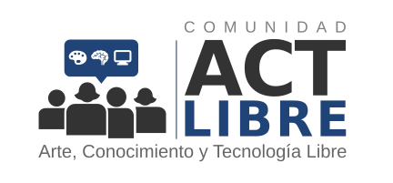

<!DOCTYPE html>
<html>


</html>


<!DOCTYPE html>
<html>

<title>Comunidad de Arte, Conocimiento y Tecnología Libre</title>
<meta http-equiv="Content-Type" content="text/html; charset=utf-8" />


<div id="wrapper" style="width:100%; text-align:center">
  
</div>

<xmp theme="cerulean" style="display:none;">
### Actividades

 * <a href="FLISoL2015/">Festival Latinoamericano de Instalación de Software Libre, 2015 (Alajuela)</a>
 * <a href="SFD2014_limon/">Día de la Libertad de Software, 2014 (Limón)</a>
 * <a href="SFD2014_alajuela/">Día de la Libertad de Software, 2014 (Alajuela)</a>
 * <a href="SFD2013/">Día de la Libertad de Software, 2013 (Alajuela)</a>
 * <a href="SFD2011/">Día de la Libertad de Software, 2011 (Cartago)</a>

----
### Contacto:

 
  * Redes sociales (privativas):
    * Twitter: https://twitter.com/ACTLibreCR
    * Facebbok: https://www.facebook.com/ActLibre


----
**Nota:**
Esta página esta hecha con <a href="http://http://daringfireball.net/projects/markdown//">markdown</a> y <a href="http://strapdownjs.com/">strapdown.js</a>.
  
</xmp>

<script src="http://strapdownjs.com/v/0.2/strapdown.js"></script>

</html>
